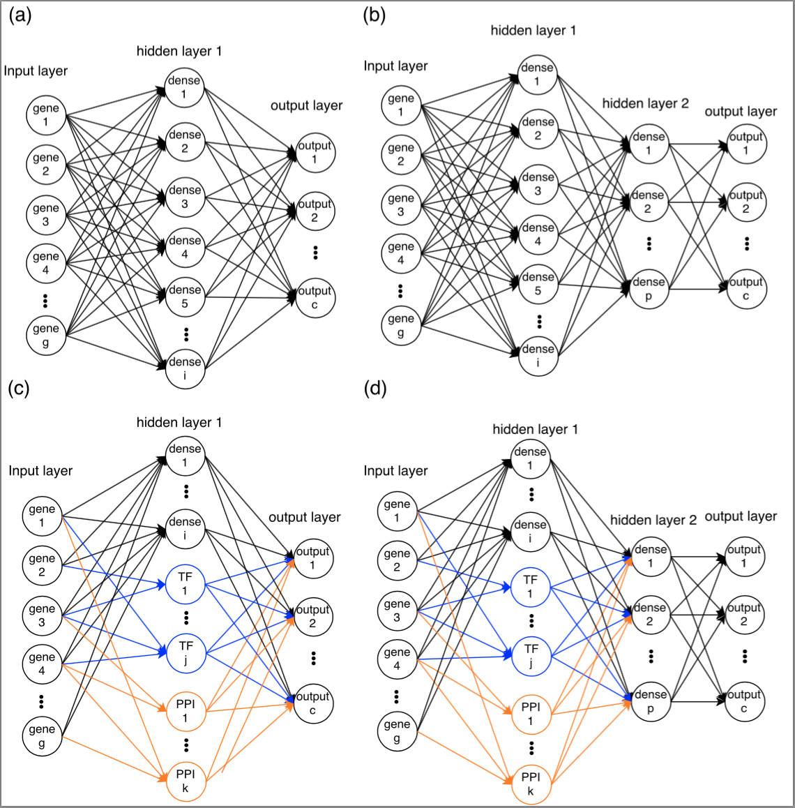

Abstract
While only recently developed, the ability to profile expression data in single cells (scRNA-Seq) has already led to several important studies and findings. However, this technology has also raised several new computational challenges including questions related to handling the noisy and sometimes incomplete data, how to identify unique group of cells in such experiments and how to determine the state or function of specific cells based on their expression profile. Here we develop and test a method based on neural networks (NN) for the analysis and retrieval of single cell RNA-Seq data. We tested various NN architectures, some biologically motivated, and used these to obtain a reduced dimension representation of the single cell expression data. We show that the NN method improves upon prior methods in both, the ability to correctly group cells in experiments not used in the training and the ability to correctly infer cell type or state by querying a database of tens of thousands of single cell profiles. Such database queries (which can be performed using our web server) will enable researchers to better characterize cells when analyzing heterogeneous scRNA-Seq samples.